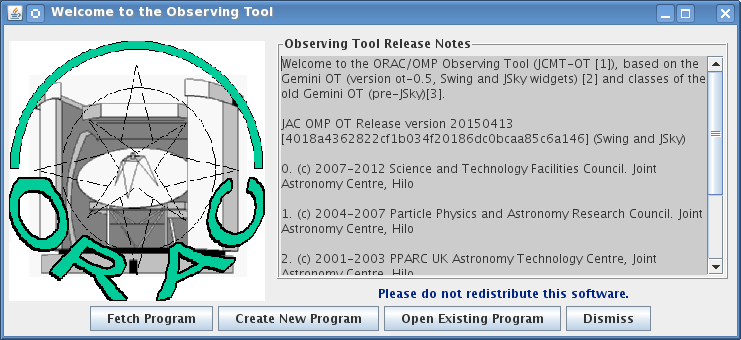

This document is a primer on how to use the JCMT Observing Tool (JCMT OT) to prepare and submit observations (see Why do I have to do this?). It assumes that you have already downloaded and installed the software (see our software installation page — make sure you have downloaded the latest version!). If you are using a JAC or summit machine, the software is already installed. You will also need the OMP password for your project in order to be able to upload your MSBs to our observing database.
If you are viewing this document through the JCMT-OT Help menu, there may be a more up-to-date version on our web site at http://www.eaobservatory.org/JCMT/observing-tool/.
If, after reading this guide you have any questions about preparing your observations, please consult with your "Friend of the Project" or email jcmtot@eaobservatory.org.
Because the OT is a graphical tool, the initial description of how to use it will undoubtedly appear long-winded. But if you use the text and screen shots to give yourself some practice you'll find that you'll actually be able to prepare your program in a modest number of steps.
This version of the JCMT OT enables users to build their science program for heterodyne and SCUBA-2 observations. A heterodyne template library and SCUBA-2 template library are provided which allow users to create MSBs for any available observing mode: Samples, Grids, Jiggles and Scans for heterodyne, and PONG or DAISY scans for SCUBA-2.
Investigators are urged to carefully inspect the example for a beam-switched observation below and to read the more extensive explanation and instructions presented for each observing mode. While the components will look familiar to experienced JCMT observers, most have changed, sometimes in a fairly subtle manner.
The JCMT observing software needs further development to enable a more flexible inclusion of calibration observations: presently there is no easy way to add calibration observation MSBs. The JCMT telescope operators (TSS) will insert calibrations, pointings, foci, etc. into the observing sequence as appropriate. Without any specific instructions in the science program calibrations will be carried out by observing a 'standard' line in a suitable calibration source.
PIs are strongly advised to, at a minimum, add instructions and wishes regarding calibrations in the Calibration Note to the TSS and observers. A sample note has been included with the library templates. For information on standard sources, lines, and observational setup, see: JCMT Heterodyne Standards. Please be aware that the submm positions for calibrators as used at the JCMT may differ substantially from the the ones in archives such as SIMBAD.
There are several options for calibrations and ways to customize them:
No special calibration MSBs are provided in the Science Program: the calibrations will be carried out on a suitable calibration source selected by the TSS at a 'standard' frequency, possibly different from MSB tuning or redshift. For many applications, this is the most appropriate option.
A number of separate calibration MSBs on suitable targets are added to the science program, clearly identified as calibrations in their title. Typically the set of calibration MSBs should cover the RA-range of the science observations to ensure that at least one calibration MSB is available at any time. PIs can customize the Het setup but need to take care to pick an appropriate switching-scheme for each calibrator chosen. The TSS will insert the calibration MSBs into the observing queue as needed and per instruction in the science program.
The ACSIS library has a set of special template MSBs for a position-switch, beam-switch, or scan calibration. The MSBs start with a series of (optional) pointing and focus observations. The calibration itself is a regular observation that has been marked as a calibration. Configure the Het setup and Target Component to customize the calibration for your project. Typically choose either a position-switch, beam-switch, or scan calibration, depending on the selected calibration target (many of which require a position-switch). Observational details for the calibrators can be found at this location: JCMT Heterodyne Standards. The calibration MSBs should be added to the science program with a high priority (low number) and high repeat counter to ensure that they will come up prominently and repeatedly in the JCMT Query Tool.
Calibration observations are part of the science MSBs:
Embed the calibration observation of a specific standard source and line in your science MSB by copying and pasting the desired components from the calibration template described above under option 2 (please read those instructions). The MSB should look like:
-------------------------
MSB
...
Het setup
Science Target
Calibration Observation (marked as Calibration)
Science Observation
-------------------------
Please be aware of inheritance: in the example above you will need to add another Target Component inside Calibration Observations with the coordinates and offsets of the calibrator! Likewise, if the calibration needs to be done at a different frequency, another Het setup needs to be added inside the Calibration Observation. This will result in the appropriate retune between the calibrator and the science target. This should NOT be done for the manually tuned RxW. WARNING: If you include a calibration observation in this manner, both your target and calibration source must be observable before the MSB can be scheduled, which can severely restrict the night-time available to the project in case of an unfortunate combination of calibration and science targets.
Issues to consider regarding calibrations may be:
How important is a precise calibration? For many projects it is sufficient to ensure that the telescope and receiver are within spec.
Can the calibration be done at a 'standard' frequency, possibly different from MSB tuning or redshift? Or should the calibration be done with the Het setup of the science observation and, if not close to a standard frequency, should a line-rich source be selected that will allow for the relative calibration of observations from night-to-night?
Can the calibration be done using a different bandwidth than the science observation? Is an increase in bandwidth allowed to catch a nearby standard line? Increasing the bandwidth should not affect the calibration, except that the peak of very narrow lines will drop because of the lower resolution.
Is it important to observe a planet? Can this be done at one of the standard frequencies or should the Het setup from the science MSB be used? Efficiencies derived from isolated observations of the continuum level of planets typically are not very accurate.
Note that throughout this document integration times are the "on"-source time only, instead of "on+off" as before.
There is a section on Advanced Topics that observers should read. There you will learn more about how the Target and Heterodyne components can interact with each other, and also how to use the AND/OR folders when you have many MSBs in your programme. Survey containers may significantly simplify your setup if used properly.
Please be sure to carefully double-check your program and to validate after high-lighting the top-most entry in the OT program. The quoted Observing times are approximate and estimates of overheads are based on limited tests. Check the validation messages and contact your Friend of the Project if you need help.
A detailed description of the various observing modes, rms noise, and durations is available as a document Heterodyne Obsmodes. Even though the information is not required in order to set up a science program, experienced as well as novice JCMT observers are encouraged to read the document as a general background.
Before we get started, a few words about the OT. The purpose of the OT is to fully specify the observations you wish to be carried out at the telescope. It is quite a powerful tool; here we will simply see how to prepare a typical observing project and point you to further sources of information as necessary.
OK, let's do this. Start the JCMT Observing Tool.
You will see two windows pop up. One has a colour picture of the telescope - that's the JCMT root window. You can use its menus to open and save files and fetch programs from our database. The window with the JCMT line drawing, which pops on top of the root window, provides a shortcut to some of the most common startup actions, so we call that the startup screen:

For now, press "Create New Program" on the startup screen. The startup window will be replaced by an science program window. If you are using a proxy server to connect to the internet now would be a good time to configure the OT to use this — see the instructions here.
("Open Existing Program" lets you open a science program that you've previously edited and saved in your own computer system. "Fetch Program" allows you to download a program that that you have completed and uploaded to our observing database. To download the program, of course, you will need the project ID (e.g. m06bc18) and password.
Look at your blank science program window. It's essentially divided in four sections:
The bar between the program panel and the editor panel can be dragged around to enlarge or reduce them.
Currently, the only thing in your program panel is a "Science Program" line. We'll add things to it later. For now, take the time to fill in its details in the Science Program editor on the right. The most important field here is the Project ID field. You have to get this right otherwise you will not be able to submit your program to us. Your project ID is what you were assigned when you submitted your proposal for telescope time. It is of the form m06b followed by a country letter and a two digit proposal number (sometimes followed by a letter).
Also on the panel are estimates of the total time the specified program will take with and without optional observations, which are currently both 0 since we haven't specified any observations yet.
Now that we've done something we can save it. Open the File menu in your Science Program window and choose "Save As...".

You will be prompted for a filename and so on:

The file format is XML, which is a text (not binary) format that you can read in later with the OT, or email to your collaborators. If you have a question, you can also email your file to your "Friend of the Project" along with your question.
You might have noticed that the title of your Science Program was italics and now that you've saved the file, the title is normal font. When you edit a component of your Science Program its title changes font to indicate that you need to save your work.
Time to step back for a moment. JCMT is a flexibly scheduled facility. But what is it that we are actually scheduling? The quantum of scheduling is a Minimum Schedulable Block, or MSB. An MSB consists of one or more scientifically meaningful observations as well as any calibrations required to fully reduce the data. An MSB will always be executed at the telescope in its entirety. For more information see What makes a good MSB? but for the moment bear in mind that the most efficient MSB consists of a 0.5 to 2 hour observation on a single science target and any necessary calibrations.
Now that you've seen the basics of creating an observing program, and know what an MSB is, you will want to start creating your own. We've created a library of MSBs for the most commonly used observing modes which are currently supported. For a description of each, and help in creating your own program, please consult the heterodyne tutorial.
Once you've created your MSBs and validated that they are correct, you will need to upload the program to our observing database so that the observations can be carried out. Check submitting MSBs for instructions on how to do so.